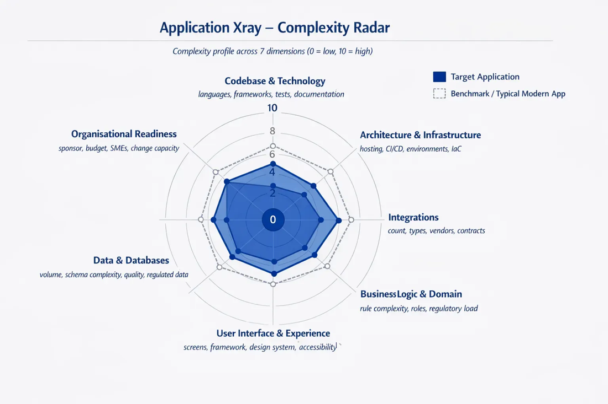
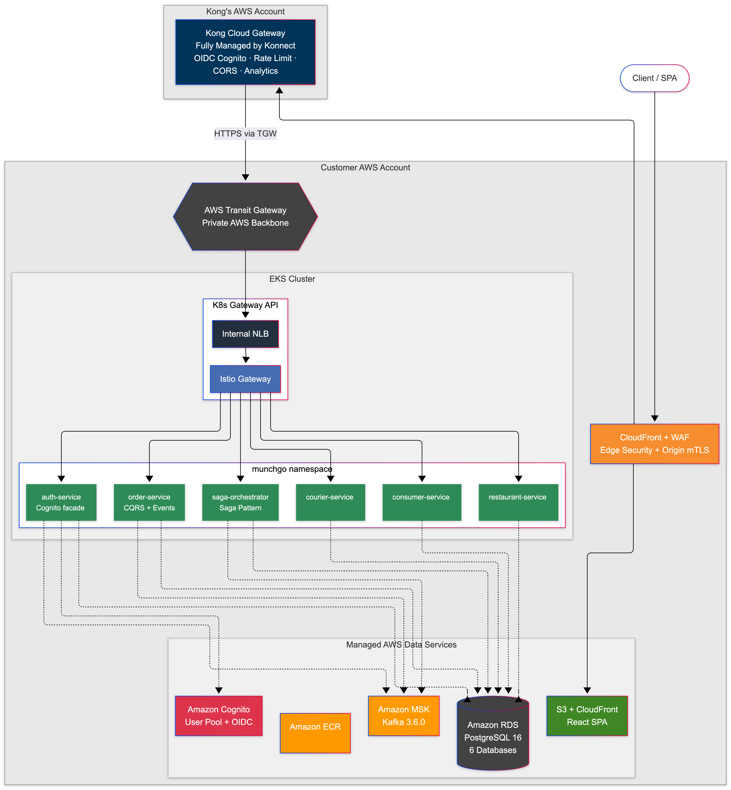

Executive Summary
This report presents the findings of the MunchGo application architecture review. The assessment covers current-state architecture, target-state design, and platform infrastructure with specific recommendations for modernisation.
Spider Analysis
The spider chart below shows the maturity assessment across key architectural dimensions including scalability, security, observability, and cost efficiency.

Figure 1: Architectural maturity spider analysis
Platform Architecture
The target platform architecture leverages AWS services for a fully serverless, event-driven design. The diagram below illustrates the complete infrastructure topology.

Figure 2: Target platform architecture on AWS
Findings Summary
| Finding | Severity | Status |
|---|---|---|
| Monolithic deployment prevents independent scaling | Critical | In Progress |
| Database connection pooling not optimised | Medium | Remediated |
| Missing distributed tracing instrumentation | Medium | Planned |
| Container images not scanned in CI pipeline | Critical | Remediated |
| CloudWatch alarms not configured for key metrics | Medium | In Progress |
| API rate limiting not enforced at gateway | Critical | Remediated |
| Static assets served from origin without CDN | Low | Remediated |